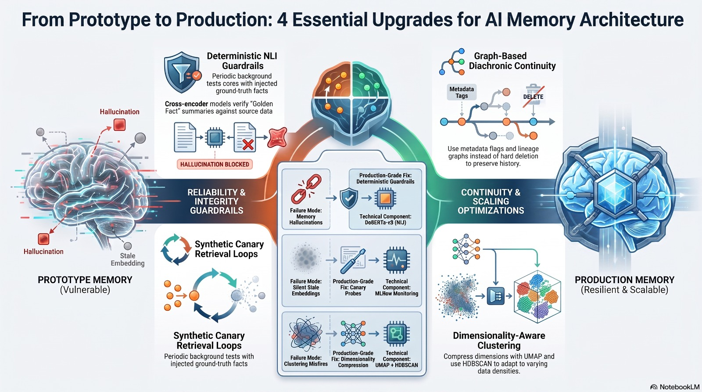

Recovery & Auto-Healing Logic
How Cogni-Intent's auto-healing works: grouping conflicting notes with HDBSCAN, monitoring Memory Health Scores, and why safe archiving is essential so old medical notes are never deleted.
Finding Conflicting Clusters (HDBSCAN)
Unlike older algorithms that force every note into artificial groups, HDBSCAN accurately spots when multiple contradictory notes pile up in the same memory spot, while leaving safe, normal notes alone (marked with label -1).
Memory Health Score
A real-time geometric health ratio quantifying vector coherence across the active context pool.
Creating & Storing the "Golden Fact"
When conflicting notes are found, the system collects the clashing statements (such as original prescription, side-effects, and drug changes). An AI model merges them into one clear, accurate Golden Fact. The new fact is saved to active memory, while older notes are safely archived.
Exponential Decay
Older memories gradually lose relevance weight over time according to exponential half-life kinetics:
Ensures fresh clinical lab results dominate older, potentially superseded observations.
Why Deleting Old Records Violates Healthcare Law
In medical, financial, and legal AI, you cannot simply delete old database rows when information changes. Here is how three common approaches compare:
Hard Deletion
Permanently deletes older notes to save memory space.
Recency Weighting
Always prioritizes newer timestamps over older notes.
Safe Archiving (No Deletion)
Creates 1 clear Golden Fact for active AI answers while safely keeping older notes linked in history.
Figure 7: The Recovery & Consolidation Loop
